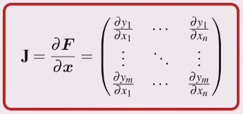

Find the expression for x and y (as a function of the joint angles) just like in when finding the inverse kinematics.
Make the joint angles functions of time
Take the derivative of x and y
Factor out the \(\dot{q_1}\) and \(\dot{q_2}\) so the equation is in matrix form
This can be written as \(v = \mathbf{J}(q)\dot{q}\)
\(v\) is the tip velocity
\(\mathbf{J}(q)\) is the Jacobian matrix
The Jacobian is the matrix equivalent of the derivative.

Here the Jacobian is a function of the joint angles and the kinematic parameters of the robot.
Greek letter nu, \(nu\)